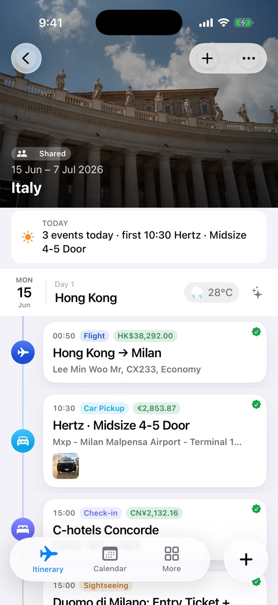
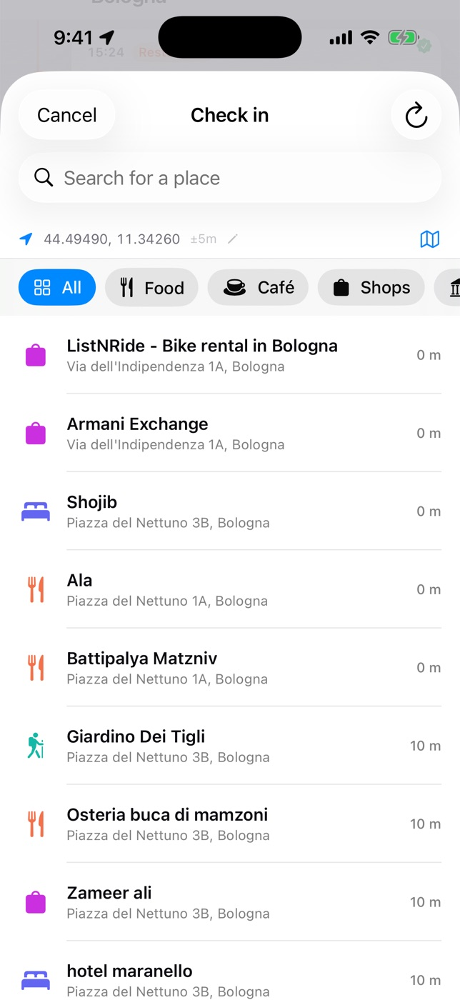
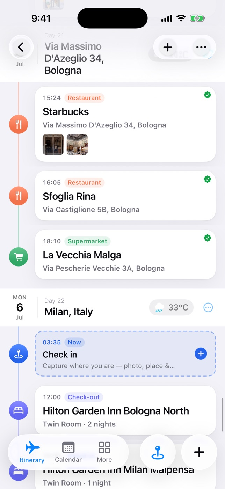
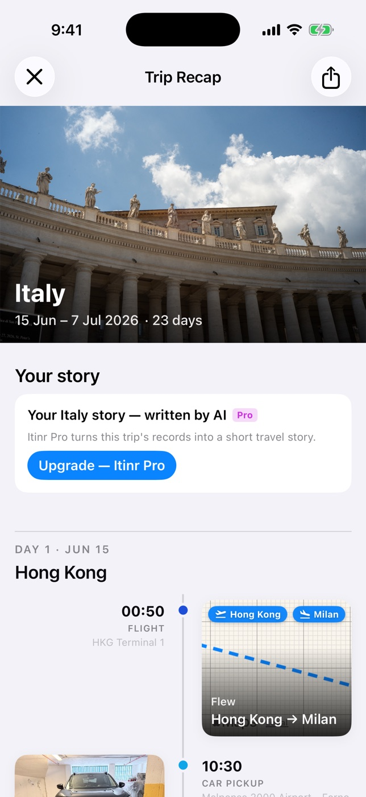
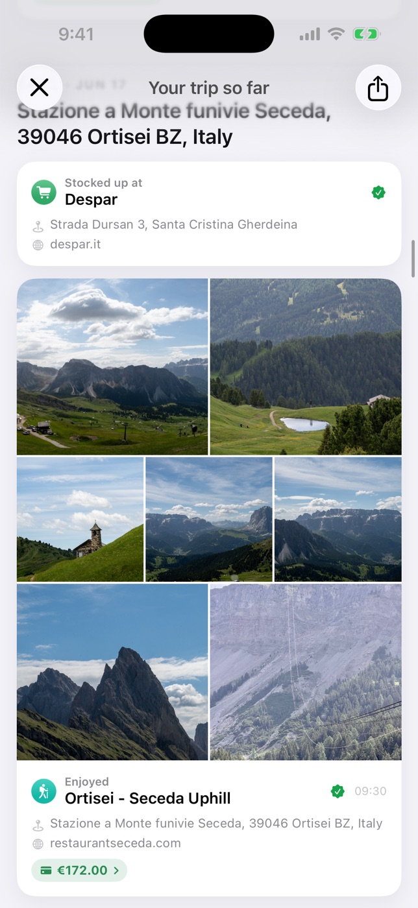

Itinr turns your booking emails into an itinerary, your check-ins into a travel log, and your whole trip into a recap worth keeping — automatically. No account. Your trip stays yours.
Planners forget your trip the moment it starts. Journals can't plan it. Itinr carries one timeline from the first booking to the last memory.
Drop in anything — get a clean itinerary.
Check in once — capture the whole moment.
Relive the whole trip in an automatic recap.
Paste a booking email, a link, or snap a confirmation — AI pulls out the flights, hotels and reservations into a clean day-by-day timeline. Or let it plan the whole trip from your taste.



Check in at a restaurant and Itinr tells you what to order — from AI, or from a photo of the actual menu. Snap the receipt and the expense files itself. Photos, notes, dishes: one tap each, all pinned to the place.
The morning after you land, your recap is ready: a timeline of your trip, day by day — your photos with the story written over them, every dish you ate, what it cost, and the exact route you traveled.


Any app can draft an itinerary. Itinr makes sure yours survives contact with the real trip — and keeps your travel data private the entire way.
On supported iPhones, AI runs on-device — your data never leaves your phone. Plan and edit your itinerary in airplane mode.
Trip Pass and Pro include managed cloud AI on any device — no keys, no setup, nothing to configure.
Prefer your own Claude, Gemini, OpenAI or DeepSeek account? Plug in your key — it's billed to you, not us.
No sign-up, no login. Trips live on your device and your own iCloud, synced across all of yours.
Most travel apps bill you all year for the two weeks you actually travel. Itinr's Trip Pass covers one trip — everything on, no subscription.
Prices are shown in the App Store for your region. Purchases are handled by your App Store account; manage or cancel the annual plan in Settings. No account required — ever.
No. There's no sign-up and no login. Your trips are stored on your device and in your own iCloud — Itinr's servers never store your trip data.
On your device and in your private iCloud database, synced across your devices. AI requests are passed through for processing only and never retained.
Everything — planning, recording, and the recap — plus a taste of AI every month. With an Apple Intelligence iPhone or your own API key, AI stays free too.
No — it's a one-time purchase for 30 days (your very first pass lasts 60). No auto-renewal. When the trip's over, it's simply over.
Yes — share via iCloud to view or edit together, or send a live web link anyone can open. Pro includes Family Sharing.
Viewing your itinerary and recording both work offline. The offline trip pack (Trip Pass/Pro) keeps every photo and document on your device in one tap — and on-device AI even works in airplane mode.